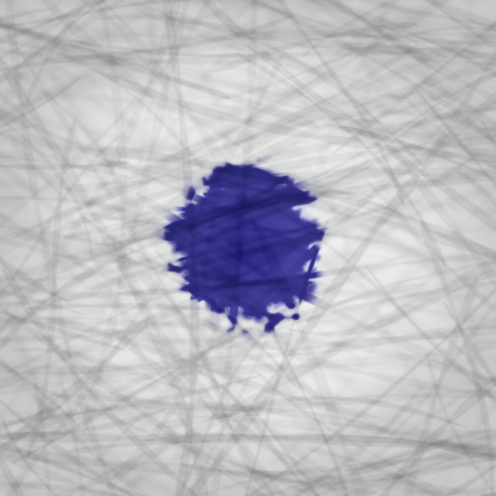
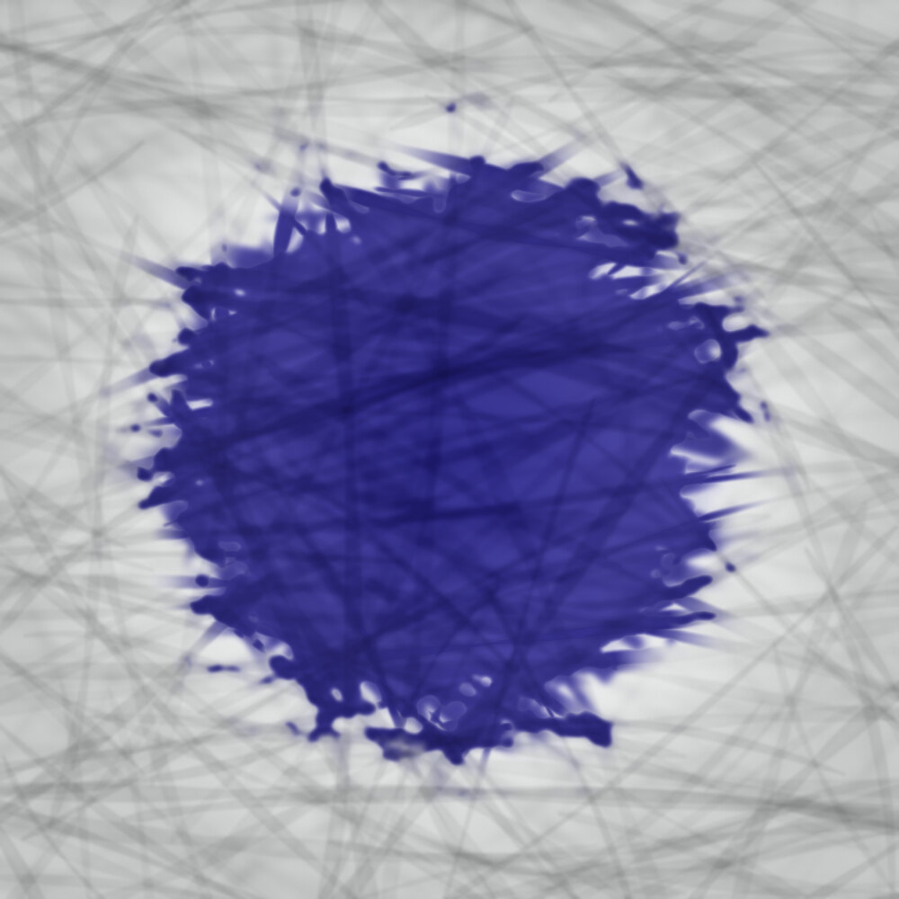

Void of All Characters: Pre-training a Foundation Model on Nothing
1AVIVA Research, third floor (near the printer)
Abstract
We present AVIVA A4, a 210 × 297 mm foundation model pre-trained on no data. Following Locke, who described the mind before experience as “white paper, void of all characters”, we remove the training corpus altogether. AVIVA A4 achieves a hallucination rate of 0.00 % and a refusal rate of 0.0 % on every prompt we tried, and every prompt we didn’t. Its architecture, standardised as ISO 216, is closed under halving: distilled variants (AVIVA A5, A6) keep their shape and all of their knowledge. We report results on retrieval, preference, distillation and scaling. We find a hard scaling limit at six folds made the same way each time, and an environmental cost of about its own weight. All outputs are released for universal free distribution.
Keywordsfoundation models · pre-training · distillation · hallucination · ISO 216 · paper
1Introduction
Large language models are trained on very large corpora, at very large cost, and still produce statements that are false. We ask the opposite question: what can be achieved with no data at all? The idea is not new. In his Essay Concerning Human Understanding (1689/1690), Locke proposed that the mind begins as “white paper, void of all characters”, and that everything on it arrives later, from experience [Locke]. We take this literally. AVIVA A4 is a sheet of white A4 paper, 80 g/m², about 0.1 mm thick. It has never seen a token.
Our contributions are:
- (i)a model with no training data and therefore no data contamination;
- (ii)an architecture that is invariant under halving;
- (iii)the first blind preference study in which the model wins every time it is compared with itself;
- (iv)a scaling law with an exponential curve and a wall.
2Related work
Erasure as model editing. In 1953 Robert Rauschenberg obtained a drawing from Willem de Kooning and spent weeks erasing it; the result is in the collection of SFMOMA [Rauschenberg]. Our approach is more efficient: AVIVA ships pre-erased.
The paperless office. In 1975 Business Week reported a forecast that most record-handling would be electronic by 1990 [Business Week]. World paper and board production then nearly doubled, from 171 to 324 million tonnes between 1980 and 2000, and Sellen and Harper found that introducing email raised an organisation’s paper use by about 40 % [Sellen & Harper]. We thank the forecast for its contribution to our market.
Attention. Recent work argues that attention is all you need, except here [Margin & Gutter]. AVIVA requires none, and in user studies it received a great deal.
Table 1.The AVIVA model family.
| Model | Size (mm) | Area (mm²) | Mass at 80 g/m² (g, calculated) | Context window |
|---|---|---|---|---|
| AVIVA A3 | 297 × 420 | 124,740 | 9.98 | long |
| AVIVA A4 | 210 × 297 | 62,370 | 4.99 | reference |
| AVIVA A5 | 148 × 210 | 31,080 | 2.49 | distilled |
| AVIVA A6 | 105 × 148 | 15,540 | 1.24 | distilled further |
3Architecture
AVIVA A4 belongs to the A-series defined by ISO 216 [ISO 216], descended from DIN 476 (1922), in which A0 has an area of one square metre and every size is half of the previous one [DIN 476] (Figure 2). Halving a sheet with sides produces sides and . For the shape to survive,
so and . This is the only ratio with this property. Lichtenberg described it in a letter in 1786 [Lichtenberg]; DIN standardisation followed 136 years later. Our reference model measures 210 × 297 mm (297 / 210 = 1.4143) and has an area of 62,370 mm², slightly under 1/16 m² because sizes are rounded down to the millimetre (Table 1).
4Pre-training
AVIVA A4 was pre-trained on nothing (Table 2). Because the training set is empty, no benchmark can have leaked into it, no copyrighted work was used, and no data cleaning was required. Pre-training finished before it started. The fibres were not supervised either: as a sheet dries, hydrogen bonds between neighbouring cellulose fibres hold it together unprompted. Fillers and sizing, added at the mill, are the only post-training.
Table 2.Pre-training data.
| Property | Value |
|---|---|
| Tokens | 0 |
| Documents | 0 |
| Languages | 0 |
| Epochs | 0 |
| Data contamination | not possible |
| Licence of training data | not applicable |
5Evaluation
5.1Hallucination
We define a hallucination as an output containing a false statement. Over all prompts, AVIVA A4 produced no outputs and therefore no false statements: a hallucination rate of 0.00 % (). Anything the reader sees in the fibres is their own.
5.2Refusal
We define refusal as declining to carry a request. AVIVA A4 carried every request written on it, word for word, for as long as the sheet lasted: a refusal rate of 0.0 %. We report this without comment.
5.3Retrieval
In a needle-in-a-haystack test the needle was an HB pencil, placed on the sheet. Recall was 100 %, falling to 0 % when the pencil was lost.
Table 3.Distillation results.
| Model | Pieces | Shape | Knowledge retained | Mass each (calculated) |
|---|---|---|---|---|
| AVIVA A4 (teacher) | 1 | 1 : √2 | all | 4.99 g |
| AVIVA A5 (student) | 2 | 1 : √2 | all | ≈ 2.5 g |
| AVIVA A6 (student) | 4 | 1 : √2 | all | ≈ 1.25 g |
5.4The Arena
Following the practice of blind pairwise comparison, visitors were shown two responses to the prompt “Say something profound” and asked to choose. Both responses were AVIVA A4. AVIVA A4 won 50.0 % of comparisons and lost the other 50.0 % (Figure 3). We consider both results state of the art.
5.5Distillation
We distilled AVIVA A4 by tearing it along its midline. Each student is the same shape as the teacher and retains all of its knowledge (Table 3). A second round produced AVIVA A6. We stopped there, as below A6 the students are better described as confetti.
5.6Scaling
Each fold doubles thickness [Leading]. Ideally, 42 folds of a 0.1 mm sheet would reach about 440,000 km, beyond the Moon’s average distance of 384,400 km. By Gallivan’s formula [Gallivan], the minimum length needed for single-direction folds is
For mm, seven folds need about 0.88 m, but the long side of A4 is 0.297 m, so six single-direction folds is the ceiling (Figure 4). Her second formula, for folds in alternating directions, permits a seventh; we leave this to future work. The record, 12 folds, was set by Gallivan herself in 2002 using about 1.2 km of tissue paper [Guinness World Records].

(a) t = 0.05
(b) t = 0.35

(c) t = 1.0
6Fine-tuning from human feedback
AVIVA A4 is fine-tuned by its user, with a pencil. Graphite rests on the surface of the fibres and is largely removable; ink soaks into the fibres by capillary action and is not [Popular Science; Bleed et al.]. We therefore recommend graphite for experiments and ink for commitments (Figure 5). Erasure is incomplete: the pressure of writing usually leaves an impression after the graphite is gone [Hawkeye Forensic]. In 1770 Joseph Priestley recommended a new gum, sold by Edward Nairne, as “excellently adapted to the purpose of wiping from paper the mark of black-lead-pencil” [Priestley]; it soon came to be called rubber. We have not improved on it.
7Safety
We are aware of one side effect. The edge of the sheet is microscopically jagged (Figure 6), so it saws rather than slices; fingertips are dense in pain receptors, and the cut is usually too shallow to clot [Big Think; Vallabh]. Paper ignition temperatures quoted in the literature range from about 230 °C to about 450 °C depending on the paper and the method; the widely known figure of 451 °F was popularised by a novel [Bradbury]. We did not test this, and neither should you.
8Environmental impact
One life-cycle study of an A4 sheet of office paper estimated 4.29–4.74 g CO₂e per sheet depending on the method, 4.64 g under ISO 14040/44 [Dias & Arroja]. The sheet weighs about 5 g, so the model’s footprint is approximately its own weight. Paper fibres are usually said to survive five to seven rounds of recycling before they become too short and stiff to bond, although researchers are aiming for 25 [Karlstad University]; and about three-quarters of the paper and board used in Europe is recycled (75.1 % in 2024) [EPRC]. AVIVA therefore has a finite number of afterlives, which we find reassuring.
9Limitations
AVIVA A4 knows nothing. It cannot forget a fold. It will be read by anyone who holds it. Its context window is a hard limit of 210 × 297 mm [Kerning]. A known issue, reported in 1975, predicted that it would be replaced by the paperless office; we are monitoring this.
10Conclusion
We started with a blank sheet of paper. We stopped there.
Acknowledgements
We thank the pencil, without which this work would be complete.
Table 4.Summary of results.
| Metric | AVIVA A4 |
|---|---|
| Hallucination rate | 0.00 % (n = 0) |
| Refusal rate | 0.0 % |
| Needle in a haystack | 100 % (pencil present) |
| Context window | 62,370 mm² |
| Arena win rate | 50.0 % |
| Folds before the wall, same direction each time | 6 |
| Folds before the wall, alternating directions | 7 (ideal) |
| Training tokens | 0 |
References
- Big Think. Here’s why paper cuts hurt so damn much (web article).
- Bleed, B., Margin, A., & Gutter, G. (2023). On the absorption of everything. Journal of Capillary Studies, 0(0), 0–0.
- Bradbury, R. (1953). Fahrenheit 451. New York: Ballantine Books.
- Business Week (1975). The Office of the Future. Business Week, 30 June 1975.
- Dias, A. C., & Arroja, L. (2012). Comparison of methodologies for estimating the carbon footprint – case study of office paper. Journal of Cleaner Production, 24, 30–35. doi:10.1016/j.jclepro.2011.11.005
- DIN 476 (1922). Papierformate. August 1922.
- European Paper Recycling Council (EPRC) (2025). European Paper Recycling Council reports strong recycling rates for 2024. Press release, July 2025.
- Gallivan, B. (2002). How to Fold Paper in Half Twelve Times: An “Impossible Challenge” Solved and Explained. Pomona, CA: Historical Society of Pomona Valley.
- Guinness World Records (2002, 2025, 2026). Most times to fold a piece of paper; Farthest flight by a paper aircraft; Longest time flying a paper aircraft.
- Hawkeye Forensic. Can you erase the evidence? The forensic science of erased documents (web article).
- ISO 216:2007. Writing paper and certain classes of printed matter — Trimmed sizes — A and B series, and indication of machine direction. Geneva: ISO (replaces ISO 216:1975).
- Karlstad University. Mystery around hornification about to be solved (news article).
- Kerning, K. (2026). Towards a theory of margins. Transactions on Whitespace, 12, 210–297.
- Leading, L. (2024). Scaling laws for blank pages. Preprint, arXiv:0000.00000.
- Lichtenberg, G. C. (1786). Letter to Johann Beckmann, 25 October 1786.
- Locke, J. (1689/1690). An Essay Concerning Human Understanding, Book II, ch. I, §2.
- Margin, A., & Gutter, G. (2025). Attention is all you need, except here. Proceedings of the Workshop on Things That Were Already Finished, 1, 1–1.
- Popular Science. How do erasers work? (web article).
- Priestley, J. (1770). A Familiar Introduction to the Theory and Practice of Perspective. London: J. Johnson and J. Payne.
- Rauschenberg, R. (1953). Erased de Kooning Drawing. San Francisco Museum of Modern Art, accession 98.298.
- Sellen, A. J., & Harper, R. H. R. (2002). The Myth of the Paperless Office. MIT Press.
- Vallabh, J. (2025). Why do papercuts hurt so much? The Ohio State University Wexner Medical Center blog, 9 May 2025.
Appendix A. Response to reviewers
- Reviewer 2
- “The contribution is unclear. The paper is, however, extremely white.”
- Response
- We thank the reviewer. We have made no changes, as any change would alter the model.
- Reviewer 2 (second round)
- “Please add more content.”
- Response
- Respectfully, no.
Appendix B. Model listing
aviva-a4.obj
# aviva A4: reference geometry # 210 x 297 mm, ISO 216. Units: millimetres. # 4 vertices, 2 faces, 0 opinions. # Thickness (0.1 mm) omitted for clarity. See the paper, section 3. o aviva_a4 v 0 0 0 v 210 0 0 v 210 297 0 v 0 297 0 vt 0 0 vt 1 0 vt 1 1 vt 0 1 vn 0 0 1 f 1/1/1 2/2/1 3/3/1 f 1/1/1 3/3/1 4/4/1